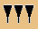
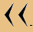
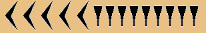
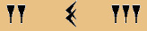
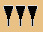
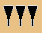
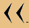
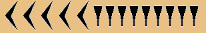
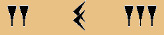
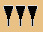

В древнем Вавилоне примерно во II тысячелетие до нашей эры была такая система счисления - числа менее 60 обозначались с помощью двух знаков:  для единицы, и для десятка. Они имели клинообразный вид, так как вавилоняне писали на глиняных табличках палочками треугольной формы. Эти знаки повторялись нужное число раз, например
 - 3;  - 20; - 32;  - 59
Числа больше 60 записывались по разрядам, с небольшими пробелами между ними:
Так записывается число 302, то есть 5*60+2.
А это 1*60*60+2*60+5 = 3725 .
Но представление некоторых чисел в этой системе будет одинаковым, например, число 302, может быть и равно и 5*60*60 + 2 = 18002. Так как нет значка для обозначения нуля.
Лишь в V веке до нашей эры был введен особый знак - наклонный клин для обозначения пропущенных разрядов, игравший роль нуля.

это запись числа 7203 (2*60*60+3).
Однако отсутствие низшего разряда не обозначалось, и поэтому число 180 = 3*60 записывалось так  , а обозначать эта запись могла и 3, и 180, и 10800 (3*60*60), и т. д.
Считается, что десятичная система была у шумеров, а после того как их завоевали семиты, их система была приспособлена под шестидесятеричную систему семитов.
Шестидесятеричная запись целых чисел не получила широкого распространения за пределами Ассиро-вавилонского царства, но шестидесятеричные дроби применяются до сих пор при измерении времени. Например, одна минута = 60 секунд, один час = 60 минут. для единицы, и для десятка. Они имели клинообразный вид, так как вавилоняне писали на глиняных табличках палочками треугольной формы. Эти знаки повторялись нужное число раз, например
 - 3;  - 20; - 32;  - 59
Числа больше 60 записывались по разрядам, с небольшими пробелами между ними:
Так записывается число 302, то есть 5*60+2.
А это 1*60*60+2*60+5 = 3725 .
Но представление некоторых чисел в этой системе будет одинаковым, например, число 302, может быть и равно и 5*60*60 + 2 = 18002. Так как нет значка для обозначения нуля.
Лишь в V веке до нашей эры был введен особый знак - наклонный клин для обозначения пропущенных разрядов, игравший роль нуля.

это запись числа 7203 (2*60*60+3).
Однако отсутствие низшего разряда не обозначалось, и поэтому число 180 = 3*60 записывалось так  , а обозначать эта запись могла и 3, и 180, и 10800 (3*60*60), и т. д.
Считается, что десятичная система была у шумеров, а после того как их завоевали семиты, их система была приспособлена под шестидесятеричную систему семитов.
Шестидесятеричная запись целых чисел не получила широкого распространения за пределами Ассиро-вавилонского царства, но шестидесятеричные дроби применяются до сих пор при измерении времени. Например, одна минута = 60 секунд, один час = 60 минут.
|